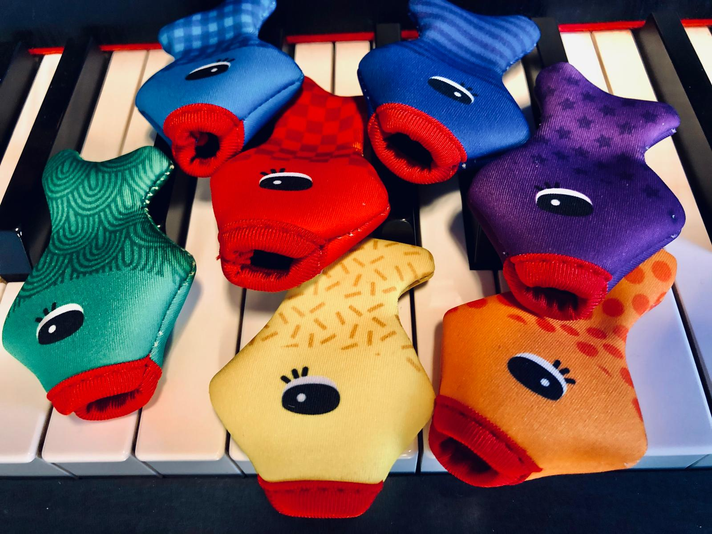
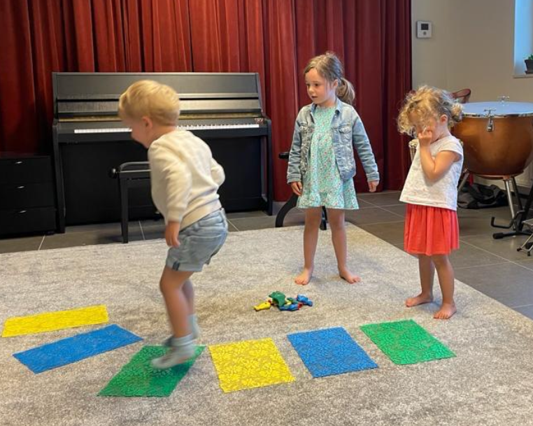
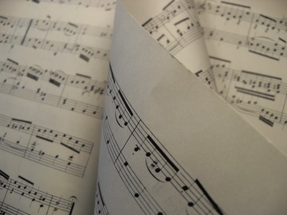

Muzieklessen
Pianoles en muziekles voor kinderen, jongeren en volwassenen.
Pianoles
Bij Praktijk Echo kan je terecht voor pianoles voor kinderen, jongeren en volwassenen. Zowel beginners als wie al enige ervaring heeft, kan instappen. Je hebt geen kennis van notenschrift nodig. We vertrekken vanuit jouw niveau en bouwen stap voor stap verder, met aandacht voor techniek, muzikaliteit en spelplezier. De lessen worden op jouw tempo opgebouwd.
Of je nu je eerste liedje wil leren, je basis wil versterken of je muzikale vaardigheden wil verdiepen: pianoles bij Praktijk Echo biedt een heldere structuur, persoonlijke begeleiding en ruimte om te groeien.
Muziekinitiatie
In muziekinitiatie ontdekken kinderen muziek op een vrije en speelse manier. We leren noten, ritme en andere muzikale bouwstenen niet vanuit theorie, maar door ze te beleven: door te spelen, te bewegen, te zingen, te luisteren en vooral… door zelf te creëren.
Via speelse opdrachten krijgt elke noot een eigen kleur en leren kinderen eenvoudige ritmes zelfstandig uitvoeren. Dat vormt de basis om hun eerste liedjes te spelen én om hun eigen muziek te componeren. (Geïnspireerd door de methode Children Are Composers.)
In vrije improvisatie experimenteren ze met klank, ritme en harmonie. Ze geven hun spontane ideeën vorm en ervaren muziek als iets dat ze zélf kunnen maken.
Zo groeit muzikale kennis vanuit plezier, nieuwsgierigheid en verwondering.
Deze ervaringen vormen een krachtige basis om te groeien: als muzikant, maar ook als persoon die met vertrouwen durft te creëren, te proberen en zichzelf te laten horen.



Notenleer op maat
Wil je je basiskennis notenleer verbeteren voor je opleiding, maar loop je tegen wat obstakels aan? Ook hiervoor kan je bij mij terecht. Samen werken we aan de benodigde vaardigheden, zodat je met zelfvertrouwen je examen kunt afleggen.
Lessen
Pianoles
Individuele lessen
- 30 minuten
- Lessen afgestemd op jouw interesses
- Flexibele planning
Muziekinitiatie
Voor jonge kinderen vanaf 5 jaar.
- Speelse kennismaking met noten, ritme en harmonie
- Ouder betrokkenheid
- Ook kinderen met leermoeilijkheden zijn welkom